Module 05 · 05 of 07
Exercise Technique & Instruction
Written Guide + Quiz
Why It Matters
Technical knowledge is worthless if it cannot be communicated effectively. This module bridges the gap between what you know and what your athlete can learn. How you cue, demonstrate, and correct movement defines your effectiveness as a coach — it is where science becomes art.
Learning Objectives
By the end of this module, you will be able to:
- Apply verbal, visual, and tactile cueing strategies effectively across skill levels
- Design and deliver structured progressions and regressions for key exercises
- Demonstrate safe spotting techniques for climbing and gym-based exercises
- Identify and correct common technique errors in both gym exercises and climbing movement
- Adapt exercises and instruction for a range of clients including special populations
- Integrate functional training tools — TRX, kettlebells, resistance bands — into climbing-specific conditioning
- Coach the foundational movement principles that underpin all climbing technique — balance, weight shift, and body tension
- Teach correct footwork, hand-hold technique, and hip positioning across wall angles
- Apply safe falling technique and effective spotting protocols in bouldering
- Deliver a structured top rope belay licensing programme
- Introduce lead clipping and lead belaying technique to a qualified top rope climber
Section 1: Cueing Strategies
A coaching cue is any piece of information delivered by a coach to prompt or correct a movement. Effective cueing is the most direct tool you have to change an athlete's technique in real time. Understanding the three modalities — verbal, visual, and tactile — and when to use each is a fundamental coaching skill.
1.1 Verbal Cueing
Verbal cues use language to guide movement. They can describe what to do (prescriptive), what not to do (prohibitive), or the outcome of a correct movement (analogical/external). Research consistently shows that external focus cues (directing attention to the movement's effect or outcome) produce better motor learning outcomes than internal focus cues (directing attention to body parts).
| Cue Type | Example & Effect |
|---|---|
| Internal focus (body part) | 'Engage your core.' — directs attention inward; useful for beginners learning body awareness but can create movement rigidity |
| External focus (outcome) | 'Push the floor away through your feet.' — directs attention outward; promotes automatic, fluent movement; better for skill acquisition |
| Analogical cue | 'Imagine you're screwing your feet into the wall.' — uses familiar imagery to trigger complex movement adjustments naturally |
| Prescriptive cue | 'Keep your elbow tucked in.' — tells the athlete exactly what to do; clear and direct |
| Prohibitive cue | 'Don't let your shoulder collapse.' — tells what not to do; can be less effective than prescriptive as it doesn't offer an alternative |
Principles of effective verbal cueing:
- Keep cues short — 3–5 words where possible. Long instructions disrupt the movement.
- One cue at a time — identify the most important error and address it first
- Prioritise external cues — outcome-focused language produces better learning
- Use consistent language — varying cue words for the same concept causes confusion
- Timing matters — cue just before the movement, not mid-execution on complex skills
1.2 Visual Cueing (Demonstration)
The old coaching adage is true: show, don't just tell. The human mirror neuron system means that watching a correct movement activates many of the same neural pathways as performing it. Demonstration is particularly powerful for complex, multi-joint movements where verbal description falls short.
Best practices for demonstration:
- Demonstrate from the correct angle — show the most informative viewpoint for the specific skill (e.g. side-on for a pull-up, front-on for footwork)
- Perform a correct demonstration first — always show the ideal before showing an error for comparison
- Slow down on key moments — exaggerate important positions (e.g. hip rotation in a drop-knee) to make them salient
- Use video — recording and playing back movement in slow motion is one of the most powerful feedback tools available
- Demonstrate at the client's level — if you cannot perform the movement correctly yourself, use video of a skilled performer
1.3 Tactile Cueing
Tactile (hands-on) cueing involves physical contact with the client to guide position or provide proprioceptive feedback. It is often the most efficient way to convey a spatial correction that cannot be easily described.
Important — Consent First
Always obtain explicit consent before using tactile cueing. Explain what you are going to do and why before making contact. Clients should be able to decline at any time without feeling uncomfortable. Document consent as part of your intake process.
Examples of tactile cueing in practice:
- Placing a hand on the athlete's shoulder blade to feel for scapular retraction during a row
- Lightly tapping a hip to prompt rotation during a drop-knee drill
- Applying gentle resistance to a limb to develop proprioceptive awareness of a position
- Using a band or strap to create sensory feedback (e.g. knee tracking during a squat)
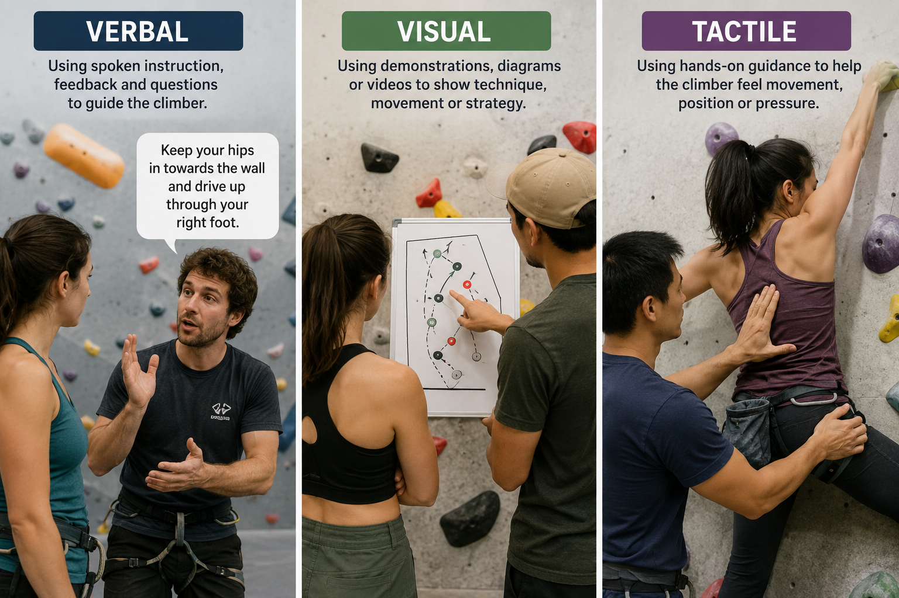
Section 2: Foundations of Climbing Movement
Before a coach can correct technique, the athlete needs the underlying movement vocabulary in place. This section covers the foundational movement principles — balance, weight shift, body tension, and hip positioning — that every other climbing skill in this course builds on.
2.1 Balance and Weight Shift
Climbers maintain stability through three points of contact with the wall at all times. Introduce two types of balance: static balance (holding a fixed pose under control) and dynamic balance (keeping balance fluid while moving between positions).
- Lateral (side-to-side) weight shift — before moving a limb, the climber must transfer weight to the opposite side; a foot or hand can only move freely once it is unweighted
- Medial (in-and-out) weight shift — moving the hips away from the wall allows the climber to see footholds more clearly and creates a more fluid foot placement
2.2 Body Tension
Body tension is the single most important physical attribute to develop early — the majority of beginner climbers fall off the wall because their body is floppy, not because they lack strength.
Teach the correct dead-hang position first: arms straight but elbows soft, neck lifted away from the shoulders so the climber hangs from the shoulder blades, not the shoulder joints. From here, ask climbers to tighten the entire body — cross the feet, squeeze legs, glutes, and core — while a partner gently pushes them from the side. The body should not swing. Instruct climbers to replicate this full-body squeeze with every hand and foot movement until it becomes automatic.
2.3 Hip-Centric Climbing
Roughly 80% of climbing is generated from the belly button down. Climbing is like cycling: the hands keep the climber on the wall and steer direction, while the legs provide the power. Coach climbers to look down more than up, and to move their feet more frequently than their hands.
- Flat walls — hips remain parallel to the wall throughout, even during twisting movements
- Forward-slanting (leaning) walls — push the hips away from the wall to create space to lift the legs and prevent the upper body falling backward
- Overhangs and roofs — the seat must move to one side by turning the body sideways; the leg opposite the reaching arm flags outward to maintain balance
Coaching Cue
For overhangs: if the athlete wants a hold to the right, the right hip goes against the wall, the right leg pushes (drop-knee), the left leg flags out, and the right arm reaches. The drop-knee does not need to be dramatic — a visible inward dip of the knee on the reaching side is sufficient.
2.4 Dynamic Movement (Dynos)
A dyno uses momentum rather than static control. Key coaching points:
- One foot is placed slightly higher than the other before the move — this foot indicates the direction of body rotation
- The hand on the same side as the higher foot is the hand that reaches
- Legs are significantly stronger than arms — coach athletes to use leg drive to generate momentum, not an arm pull
- All four limbs must leave the starting holds — a common error is leaving one hand on the start grip
- During practice, have climbers slap the wall without grabbing to avoid skin tears; save committed grabs for actual sends
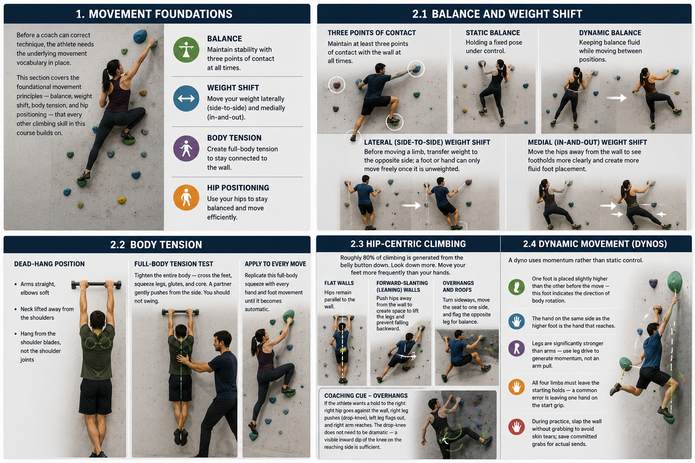
Section 3: Footwork and Hand Technique
Precise footwork and efficient hand-hold technique are the most common technical deficits seen in developing climbers. This section gives coaches a reference vocabulary and the specific cues and drills to correct the most frequent errors.
3.1 Footwork Fundamentals
All climbing footwork should be placed on the ball of the foot or the big toe — the only part of the foot that allows the climber to push up and increase reach or height. Placing the middle of the foot or the heel on a hold sacrifices this advantage.
| Technique | Coaching Description |
|---|---|
| Smear | The entire front of the foot is pressed against the wall to generate friction. The harder the push, the better the grip; the closer the foot is to knee/thigh height, the better it sticks. |
| Inside Edge | The big-toe side of the shoe is placed on the hold — used for precision footwork and reaching. |
| Outside Edge | The little-toe side of the shoe is placed on the hold — used in traversing and drop-knee movements. |
| Heel Hook | Predominantly the outside foot (except on roofs). Place the heel firmly in the hold and pull downward in an arc, as if bringing the hold to the seat. Prioritise getting the knee directly above the heel before locating the next hand hold. |
| Toe Hook | Predominantly the inside foot (except on roofs). The toe hooks behind the hold with the leg fully tensed; stabilises the body and can also be used to pull. |
| Bicycle (Heel/Toe) | A simultaneous outside heel hook and inside toe press, pulled and pushed hard at the same time — a stabilising move common on steep terrain and overhangs. |
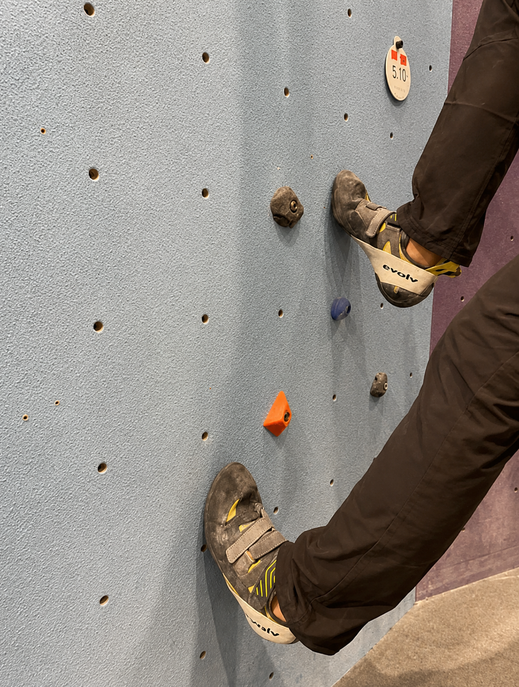
Smear
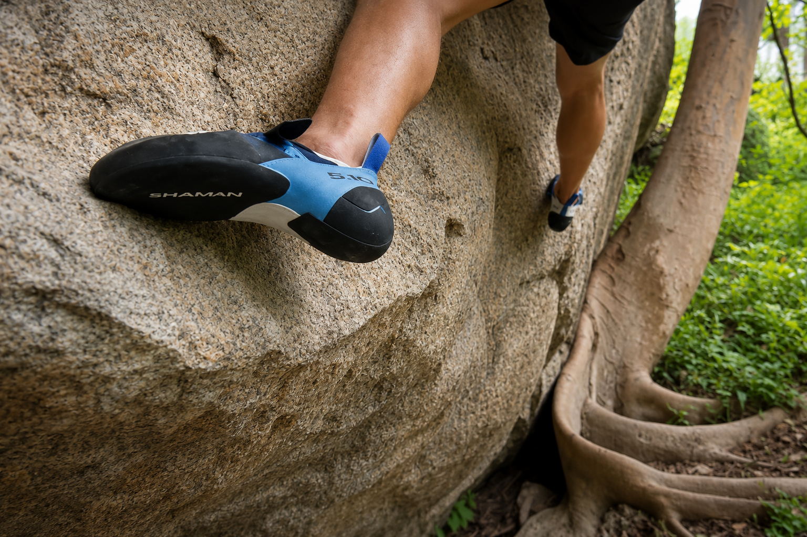
Inside Edge
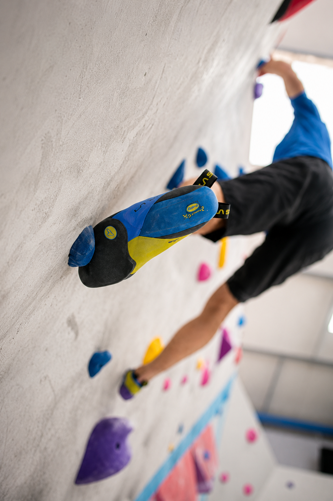
Outside Edge
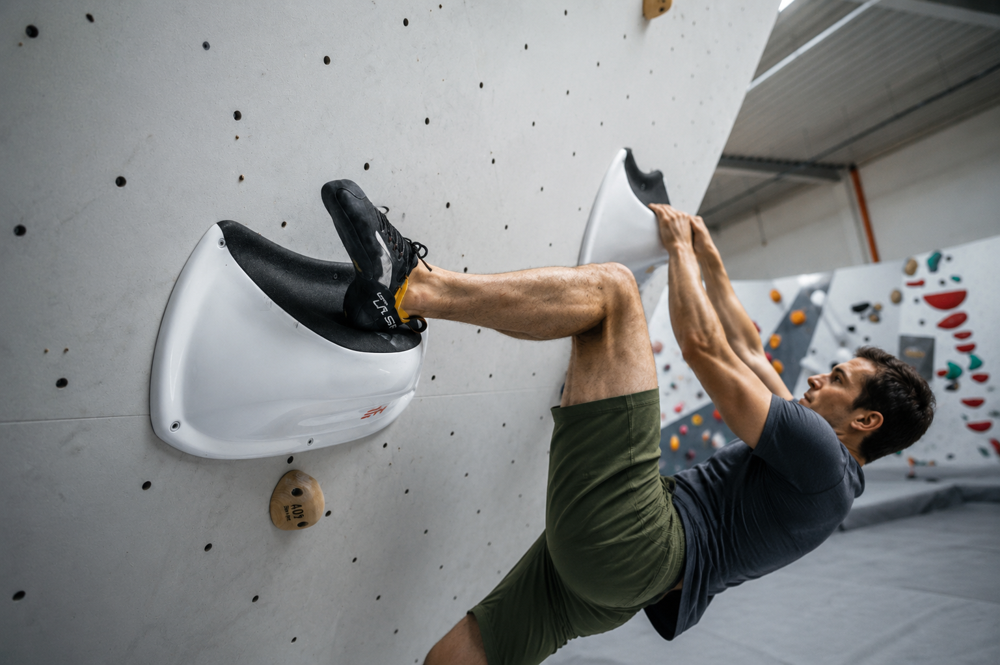
Heel Hook
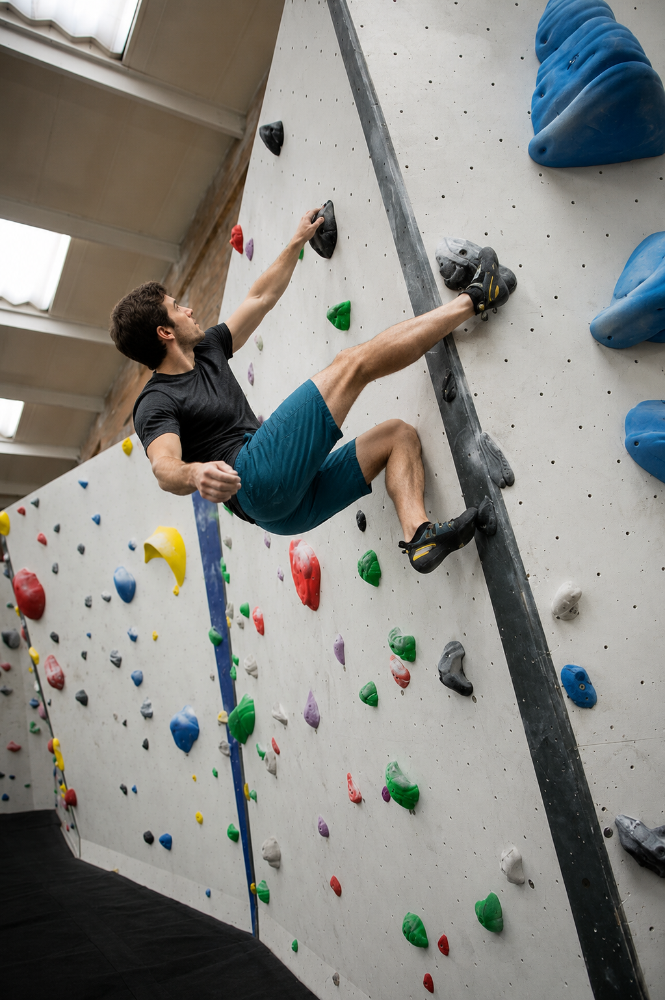
Toe Hook
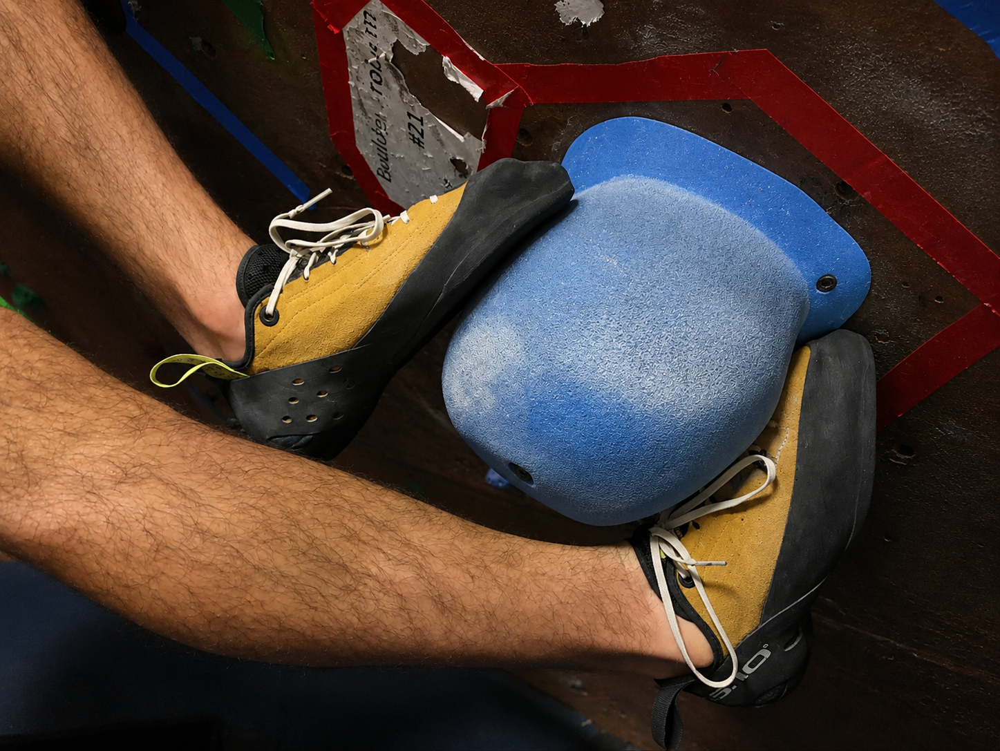
Bicycle
Coach Note
All beginner climbers fail to use their heel hooks fully. The pull must be committed — a half-hearted heel hook provides little benefit. The same applies to toe hooks: these muscles are rarely trained in everyday life and will be weak initially.
3.2 Hand-Hold Technique
- Sloping holds — the entire palm grips from the edges, not just the fingertips; as the hand slides, the climber should push harder into the grip rather than easing off
- Ball-shaped holds (two hands) — bring the elbows in toward each other and stretch the shoulder blades apart to increase skin-surface contact
- Gastons — the inside hand pushes away from the midline, like opening a sliding door; squeeze the shoulder blades together first and lock the core throughout
- Palming — fingers should always face downward or sideways, never upward; above shoulder height with fingers pointing up, the wrist cannot maintain an effective angle and the grip will fail
- Side pulls — the outside hand pulls either toward the hold (cross-through reach) or away from it (opposite-direction reach); the analogy of closing a sliding door is useful here too
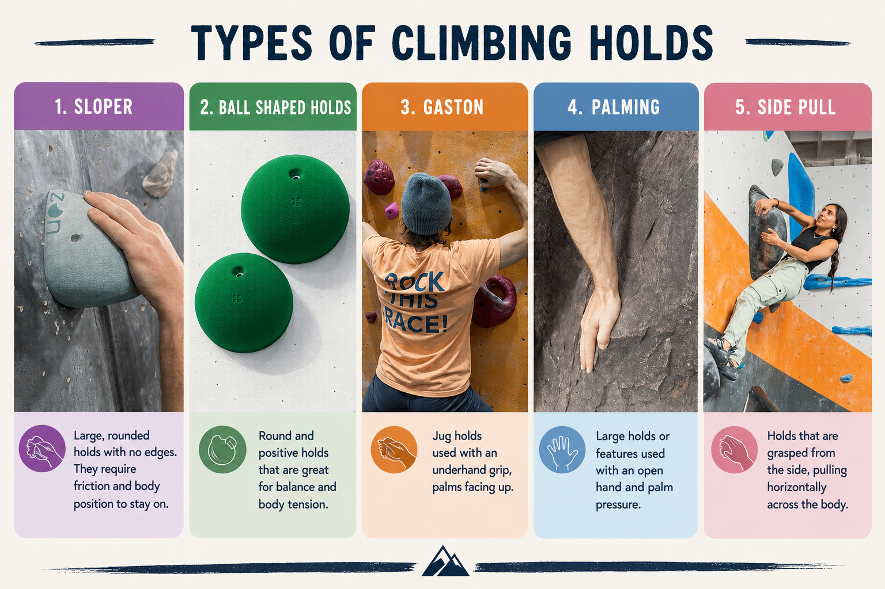
3.3 Common Footwork and Movement Errors
| Error | Correction Cue & Drill |
|---|---|
| Smearing feet — heels dropping, toes lifting | 'Weight through the ball of the foot; heel level with the toe.' Slab footwork drills on juggy routes below limit grade. |
| Barn-door (swinging out from the wall) | 'Flag the free leg behind you to counterbalance.' Flagging drills — practice on a traverse with one hand deliberately off-balance. |
| Straight-arming and overgripping | 'Imagine your fingers are just hooks — your arms should be almost straight on rests.' Low-angle volume climbing with a focus on relaxing the grip between moves. |
| Not using hips — square on to steep terrain | 'Drop the hip of the foot that is pushing — twist your core into the wall.' Hip rotation drills on 45-degree boards; drop-knee specific practice. |
| Looking at hands instead of feet | 'Your feet are smarter than you think — trust them and look where you're going next.' Blindfold footwork drill (on easy low problems with supervision). |
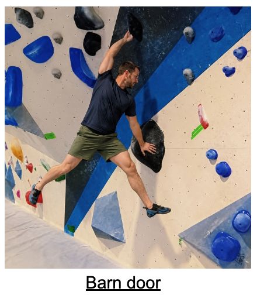
Barn door
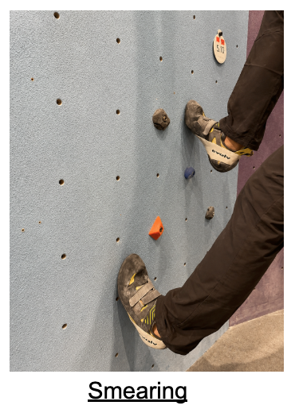
Smearing
Section 4: Spotting Techniques & Safety Protocols
Safety is non-negotiable in coaching. Every session, whether on the wall or in the gym, carries risk — a coach's responsibility is to minimise that risk through preparation, vigilance, and sound spotting technique. These skills must be taught before climbers are allowed to attempt boulder problems without a rope.
4.1 Understanding Falls
Falls occur in two forms: unexpected (a foot slips without warning) and anticipated (the climber pumps out or deliberately backs down). The physical forces involved are identical in both cases. A falling climber accelerates toward the ground at 9.8 m/s². Even a fall from just one metre produces a landing force nine times the climber's body weight — enough to snap an ankle.
The spotter's primary job is to make contact as early as possible to slow the fall. The moment a climber moves out of easy arm's reach, the spotter's ability to help diminishes dramatically. Never attempt to catch and hold a falling climber; instead, slow and redirect the fall.
4.2 Falling Technique for the Climber
The goal when falling is to dissipate force across as much time and body surface as possible:
- Lift both arms forward to prevent landing on the elbows
- Tuck the chin to prevent whiplash and to protect the spotter
- Tuck the pelvis to protect the coccyx and spine
- Land with soft, bent knees to prevent tibial fractures
- Continue moving with gravity — roll backwards into the fall rather than resisting it
When falling sideways or backwards, avoid the instinct to brace with hands pointing away from the body (a 'closed system'). Instead, point fingers toward the body ('thumbs to the bum'), which keeps the elbows free to bend and absorb impact (an 'open system').
4.3 Spotting in the Climbing Gym — Bouldering
Spotting in bouldering does not mean catching the climber like a football — it means guiding the climber to land safely, particularly protecting the head and neck from hitting the mat or the wall.
- Position yourself behind and below the climber's centre of mass — typically at hip/lower back height
- Keep hands raised and ready — palms open, arms slightly bent; do not grab
- Guide, don't catch — redirect the fall to a safe mat landing; absorbing the full body weight risks injury to both parties
- Watch the hips, not the hands — the hips indicate fall trajectory; this is where to direct your attention
- Communicate — ask the climber if they want spotting; brief them on your intentions before they start
- Clear the landing zone — remove bags, shoes, water bottles from the fall zone before the climber starts
- Never agree to spot if you are not fully comfortable or if there is a large weight discrepancy — find a more suitable spotter
- Pad preparation — position crash pads flat with no hollow spots or edges over the anticipated landing zone; assign pad-moving during the ascent to a separate person
- Aim to grasp just above the waist (near the centre of gravity); sliding into the armpits also works — do not grab too low, as this can cause dangerous backward rotation
- Protect the head, neck, and spine above all else; help the climber land on their feet where possible, then allow them to naturally compress and roll
Watch this video for further insight:
▶ Bouldering Spotting Technique| Wall Angle | Spotting Position |
|---|---|
| Flat wall | Aim hands at the climber's waist |
| Overhang or roof | Aim hands at the climber's shoulders |
| Spotter stance | One foot back in a curtsy so that knees open and the climber can fall between them onto the spotter's chest, then tuck pelvis and chin and roll backward with the climber |
4.4 Safety in the Gym Environment
When coaching gym-based conditioning:
- Conduct an equipment check before every session — collars on barbells, correct cable attachments, no sharp edges or damaged equipment
- Control the environment — keep the floor clear of tripping hazards; ensure adequate space around equipment
- Know your limits — spot only exercises you are physically capable of assisting safely. A failed spot can injure both the coach and athlete.
- Spot correctly for each exercise — different exercises have different spotting positions and priorities (e.g. bench press: hands beneath the bar; squat: hands at the hips/trunk)
- Emergency protocols — know the location of first aid equipment, AED, and emergency exit; have the client's emergency contact accessible.
Section 5: Top Rope Belay Instructing
Top rope belay instruction typically runs across three progressive sessions. Climbers must demonstrate consistent competence at each stage before advancing; the final session culminates in a supervised coach assessment and formal belay test.
5.1 Session Structure
| Session | Content |
|---|---|
| Session One | Fitting the harness correctly; performing harness checks; tying the Figure-8 knot; performing knot checks; auto-belay climbing (instruct climbers to climb on their toes) |
| Session Two | Repeat harness and knot checks; Grigri setup, orientation checks, and mechanism explanation; top rope belaying with no climber on the rope; call signs; top rope belaying with a climber |
| Session Three | Review all equipment checks; full top rope belaying review with a climber; coach mock assessment on the wall; official belay test |
5.2 Teaching the Harness
Always teach harness knowledge in the order in which it is put on:
- Why it sits at belly-button height — equal body weight above and below prevents inversion in a fall
- Why it must be tight — a loose harness shifts under load
- Why it must not be upside down — it is not designed to carry load in that orientation
- How to identify an upside-down harness: orange tag faces down, buckle on the wrong side, writing inverted, elastic straps at the back are crossed
- How to identify a twisted harness: strap joining the leg loop is twisted, belay loop is twisted, leg flaps face inward
- What double-backed buckles mean: the loose end of the belt threads through the buckle and folds back against itself in the direction it came from
5.3 Teaching the Figure-8 Knot
A simple method for young or beginner climbers:
- Measure a full arm-stretch of tail rope
- Make an 'alien head' at the end of the tail
- Draw a circle all the way around the alien head, then thread the tail through the front of the alien head
- The knot must sit as close to the harness as possible — it is the strongest part of the rope and works best closest to the heaviest load, the climber
- Count the strands to verify the knot: 2, 4, 6, 8, 10
- Safety knot: draw a circle around the rope leading to the wall with the loose tail, then fold the tail through so it points away from the Figure-8; the safety knot must sit on top of the Figure-8
5.4 Belaying Technique — PBUS
The top-roping belay technique commonly known as PBUS resonates with climbing instructors and mentors because it emphasizes the fundamental principles so distinctly. The hand transition is securely in the braking position, and it's hard to imagine the belayer losing control if the climber were to fall while the hand was sliding. Plus, the ergonomics of the technique keep the wrist and grip pronated.
Coach Note
Explain why thumbs must stay up: with thumbs pointing downward, the wrist angle under load will cause the wrist to torque upward, risking joint damage. Thumbs up allows much stronger and more controlled holding.
| Step | Action |
|---|---|
| P | PULL — Both ropes run parallel as the top hand pulls down and the bottom hand pulls up simultaneously — one single motion, both ropes moving together. Never move them separately, as this jams the device. |
| B | BRAKE — The bottom hand returns to below the belay device — this position locks the belay device and allows the belayer to control and hold the weight of a falling climber. |
| U | UNDER — The top hand moves down to the bottom rope, immediately below the other hand. Never swap above the Grigri — a fall during the swap would leave no brake hand in position. |
| S | SLIDE — The top hand slides back up the bottom rope, ready for the next belay cycle. |
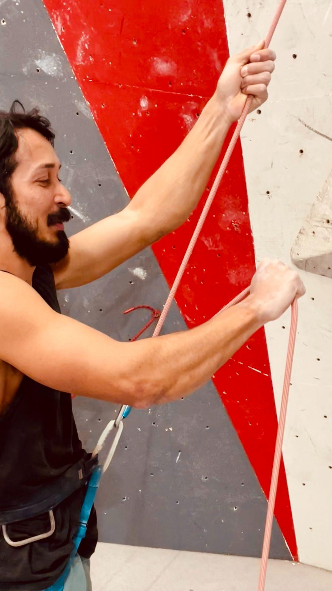
Pull
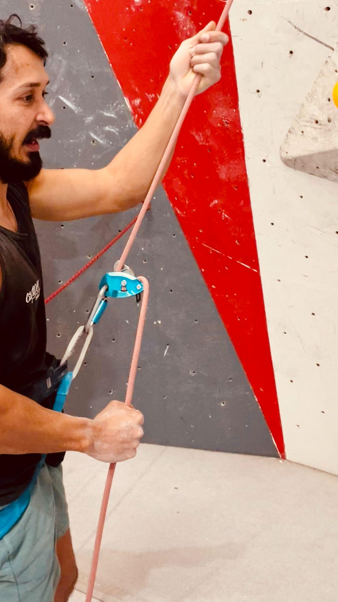
Brake
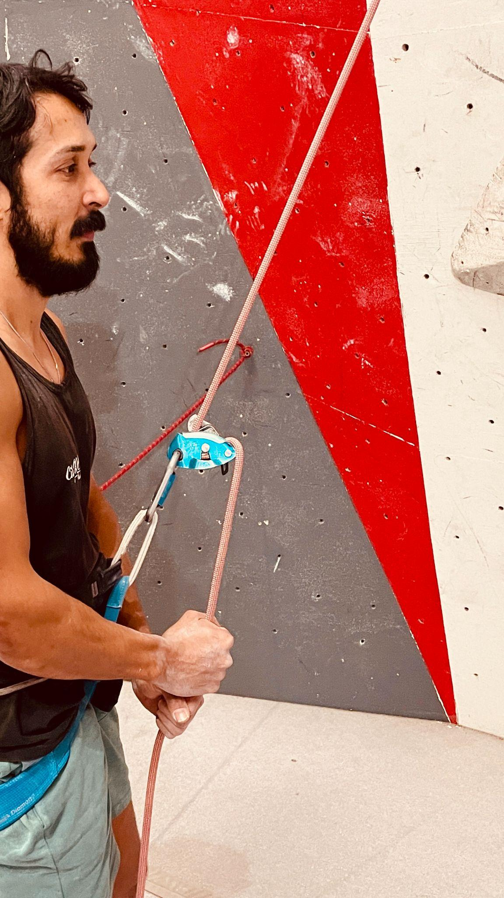
Under
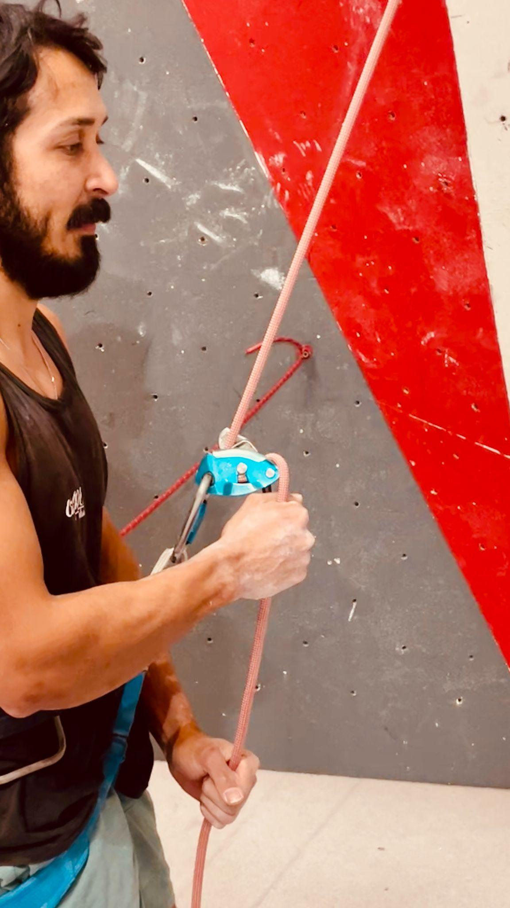
Slide
Coaches must communicate the gravity of never releasing the brake hand in unambiguous terms: releasing the brake hand while belaying can kill the climber. The belayer holds their partner's life in one hand — this is an adult responsibility, and should be framed in terms the student will remember.
Watch the following video for further insight:
▶ PBUS Belaying TechniqueDifferent belay techniques are discussed fully in this article by the American Alpine Club:
🔗 American Alpine Club — Belaying5.5 Lowering and Call Signs
- Both hands hold the bottom rope when the climber is at the top; ask the climber to sit back into the harness so weight activates the braking mechanism
- Bring the rope over the smooth part of the device and down to hip level; the brake hand stays at the hip as the rope slides slowly through the fingers
- Pull the release lever back gradually to allow a controlled descent
- Once the climber is on the ground, hold the release down and use the brake hand to pull the top rope up out of the device to give the climber slack to untie
Call signs — ask the group who is in charge: the answer is always the belayer. Climbers must never begin climbing until the belayer has confirmed readiness.
- Belayer: 'Belay on, climb when ready'
- Climber: 'Climbing'
- Belayer: 'Climb on'
Section 6: Lead Clipping and Lead Belaying Instruction
Lead instruction is only appropriate once a climber holds a top rope belay licence. Begin by explaining what lead climbing and lead belaying are, and how they differ from top rope. All skills in this section should be practised on the ground before moving to the wall.
6.1 Clipping Quickdraws
Explain the anatomy of a quickdraw: two carabiners connected by a nylon dogbone. Identify the front (gate side) and back (solid spine) of a carabiner.
- Always clip in order from the knot upward to avoid Z-clipping
- Slide the hand under the rope — palm facing up — until the hand is up against the gate of the carabiner. This ensures enough rope to complete the clip and prevents back-clipping
| Method | Technique |
|---|---|
| The Okay Method (thumb on gate side) | Middle and ring fingers pull down on the bottom of the carabiner to control it; thumb on the gate side. Practice five times with each hand. |
| The Squeeze Method (thumb on spine side) | Pointer, middle, and ring fingers slide behind the carabiner; these curl around the spine while the fleshy pad below the thumb presses the carabiner from the front; the rope rests on the web between thumb and pointer finger, and the thumb pushes the rope through the gate. |
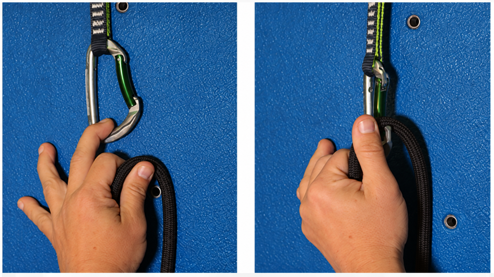
The Okay Method
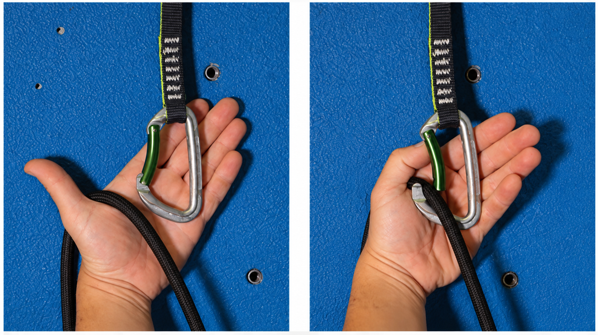
The Squeeze Method
Coach Note
After teaching the Okay method, demonstrate a back-clip and show what happens if the climber falls on a back-clipped draw — the rope unclips itself.
Clipping Faults
As you clip, you raise the highest anchor point, which protects you in the event of a fall. Clipping incorrectly exposes you to additional risks, so a leader must be able to recognize errors and know how to correct them.
Back-Clip
When the rope has been clipped in the opposite direction, with the climber's strand trapped between the carabiner and the wall, it is back-clipped. In this position, the rope has a higher chance of catching the gate and unclipping itself in the event of a fall. Fix a back clip by downclimbing to a stance below the draw, unclip by bringing a bight of rope up and through the gate, then reclip properly.
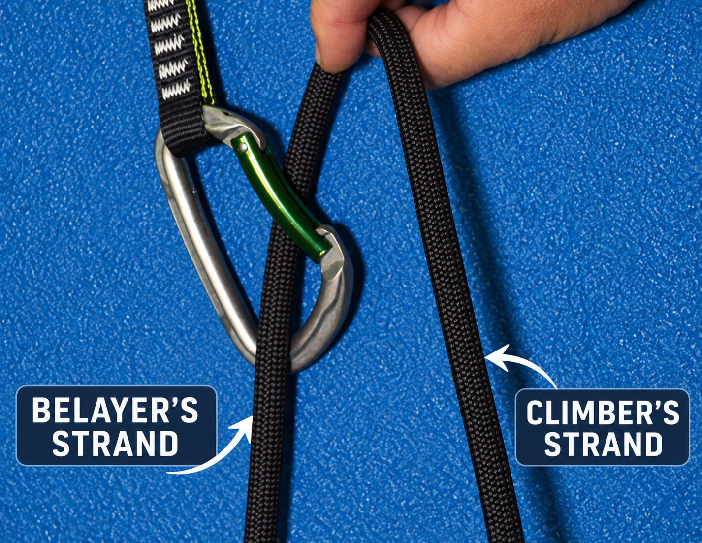
Z-Clip
When you make your next clip using a bight of rope from below the previous clip, you have Z-clipped. In this position, you have failed to move your anchor point higher than the previous clip, exposing you to a longer, more dangerous fall if you continue. You will also experience significant rope drag if you continue.
Fix a Z-clip by down-climbing to a stance where you can reach the lower draw, unclip the lower draw, then reclip it to the other strand in the correct position. This automatically moves your highest anchor point and removes the drag from the system.
You must then check to make sure your highest clip is not back-clipped (fix it, if it is), as this is sometimes a consequence of a Z-clip.
You can avoid Z-clipping by starting your clip by grabbing your tie-in knot, then sliding your hand down for the rope segment you will clip.
When Z-clipped, you have failed to raise your anchor point. By unclipping the lower draw first, you instantly correct the problem. Remember to reclip the lower draw correctly before moving on, and verify the higher clip is not back-clipped.
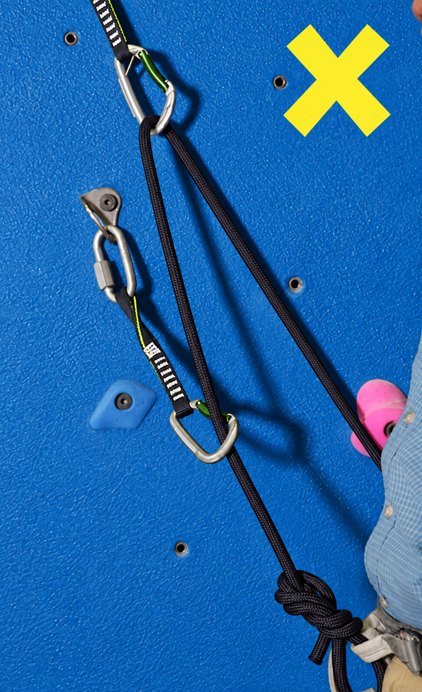
Skipping Clips
Skipping clips exposes you to longer, potentially unprotected, falls. Scope out your clipping line before you leave the ground. If you realize you have just skipped a clip, downclimb and clip it before continuing.
Hand through the gate
When you are clipping, it is best to keep any part of your hand from going through the gate. Falling with a part of your hand entangled with the exposed nose of the gate can result in puncture wounds or "de-gloving" of your skin. Use clipping methods that don't rely on this hazard.
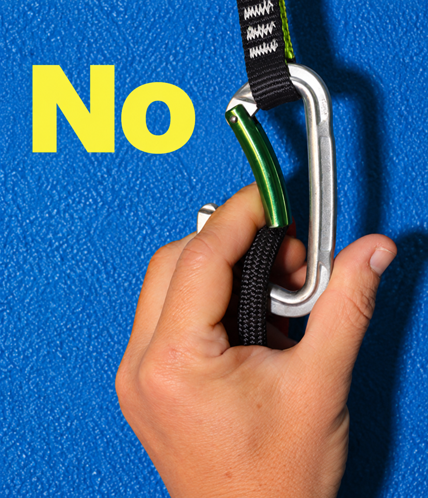
Rope in the teeth
Some climbers will temporarily put the rope in their teeth when making a high clip, in order to gather an extra length of rope to clip with. Falling with the rope in your teeth can result in having your teeth pulled out of your mouth. If you must high clip, make a long reach out instead to get the requisite amount of rope. Better yet, climb to a higher stance whenever possible for an easier clip.
Clipping the Chains at the Top
There will be two anchor quickdraws (chains) at the top of the route, with gates facing each other or spines facing each other.
- Gates facing each other: clip either carabiner first, take the front strand of rope and clip the second carabiner from the front — the two carabiners form a heart shape with gates facing outward
- Spines facing each other: clip either carabiner first, pull the back strand of rope through between the two carabiners, and clip the second carabiner from the front
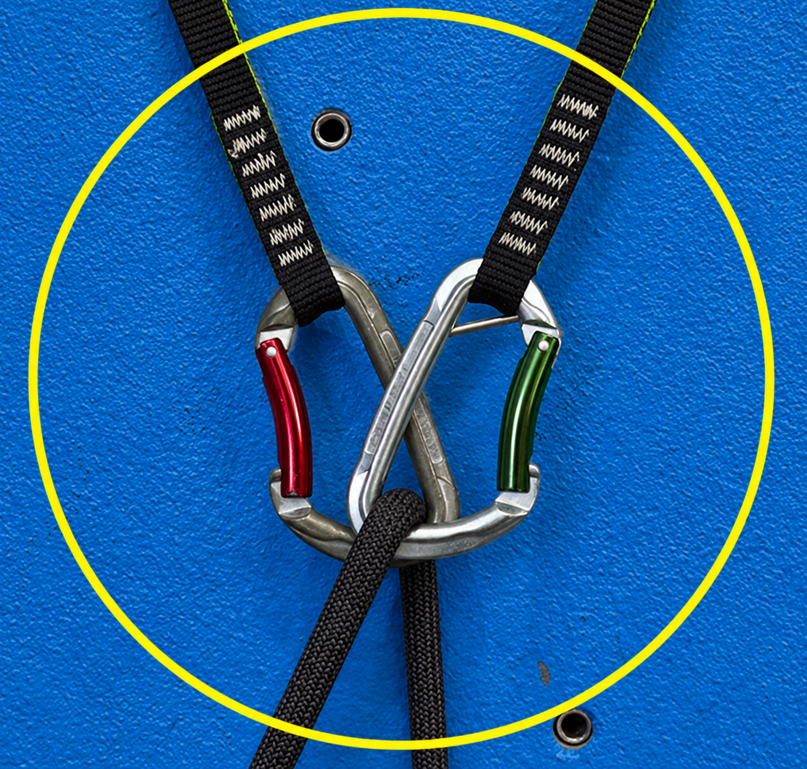
6.2 The Smart or Pilot Belay Device
Use a pre-loaded Grigri as a reference point. Ask climbers to find the hand picture, climber picture, and rope loop on the Smart or Pilot, and align these with those on the Grigri.
- Loading: make an alien head (bight of rope), push it into the loop of the device, then thread the locking carabiner through both the device loop and the rope inside it
- Attaching to harness: the nose of the device must always face downward; use a manual locking carabiner screwed fully closed, then backed off half a turn
- The widest part of the carabiner must be on the device-and-rope side, not the harness loop side — this gives more space for the device and rope to move
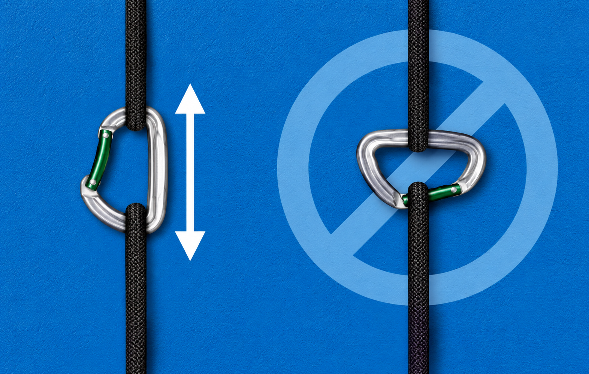
6.3 Lead Belaying
Ask the climber to first perform a normal top rope belay, then demonstrate: 'Show me how you would hand something to someone.' Use this motion to illustrate what lead belaying means — giving rope to the climber as they move up.
- Slide the bottom hand gently down the bottom rope (stroking motion) to create slack
- Push the bottom rope upward toward the device until a loop forms below the device
- Pull the top rope — giving it to the climber
- The bottom hand must always remain below the belay device
Coach Note
If the top rope is pulled first, or the climber jerks the rope, it will jam against the locking carabiner. This is a normal occurrence in lead belaying; coaches must teach the release procedure: slide the bottom hand down first, then bring the thumb under the nose of the device and lift upward to release.
If the climber falls during lead climbing, the belayer has very little time to react. The only movement needed: bring the top hand down immediately to the bottom hand and hold both firmly on the bottom rope.
Different belay techniques are discussed fully in this article by the American Alpine Club:
🔗 American Alpine Club — BelayingSwitching to Top Rope at the Anchors
Once the climber reaches the top and clips the chains, the belayer switches to top rope mode — taking up all slack as the climber is lowered from the chains. Lowering then proceeds identically to a standard top rope lowering sequence.
Watch the following video for further insights on lead belaying technique:
▶ Lead Belaying TechniqueSection 7: Teaching Progressions & Regressions
A progression makes an exercise harder; a regression makes it easier. Every exercise you prescribe should have both — this allows you to safely challenge more capable athletes while providing achievable entry points for beginners. The ability to modify exercises fluidly is a hallmark of an experienced coach.
7.1 Principles of Effective Progressions
- Change one variable at a time — adding load AND speed AND complexity simultaneously makes it impossible to identify what caused a failure
- Master fundamentals first — progress is only appropriate when technique is solid at the current level
- Fatigue affects technique — always evaluate technique in a rested state before progressing; poor technique under fatigue is not readiness
- Regress without shame — if a client is unable to perform an exercise safely, regressing is always the right decision
7.2 Exercise Progression / Regression Examples for Climbing
| Exercise | Regression → Progression |
|---|---|
| Pull-up | Assisted pull-up (band or machine), TRX row, inverted row → Weighted pull-up, L-sit pull-up, one-arm pull-up negatives |
| Hangboard dead hang | Assisted hang (feet on ground/box), shorter duration, larger edge → Weighted hang, one-arm hang, smaller edge depth |
| Push-up | Incline push-up, wall push-up → Decline push-up, ring push-up, weighted vest push-up |
| Single-leg squat | Box squat, goblet squat, split squat → Pistol squat, single-leg squat with load, Bulgarian split squat |
| Core plank | Knees-down plank, shorter duration → Extended plank, plank with arm/leg lifts, RKC plank |
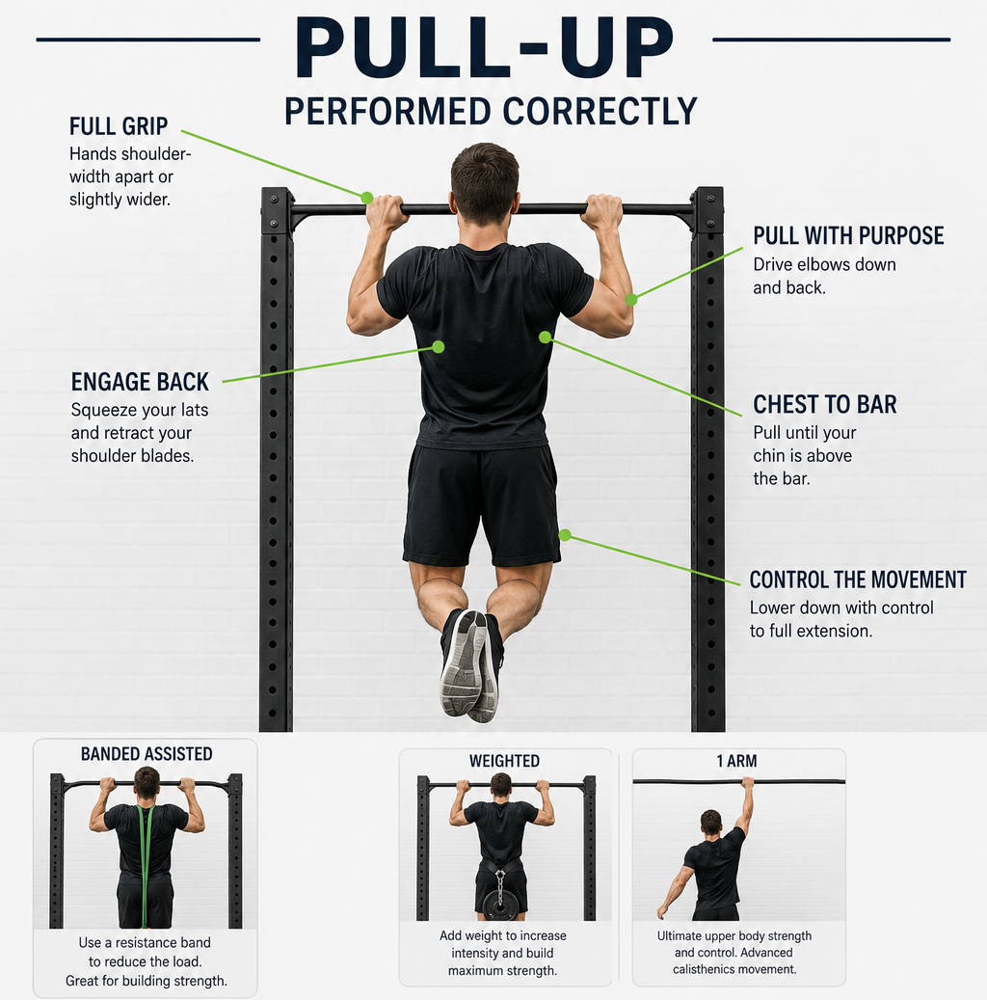
Pull-up
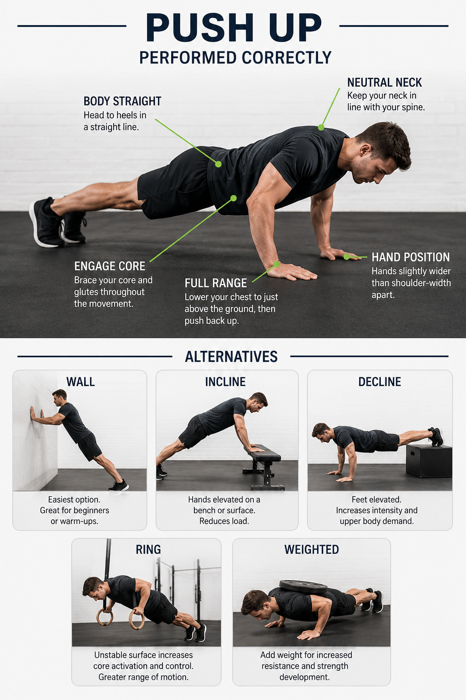
Push-up
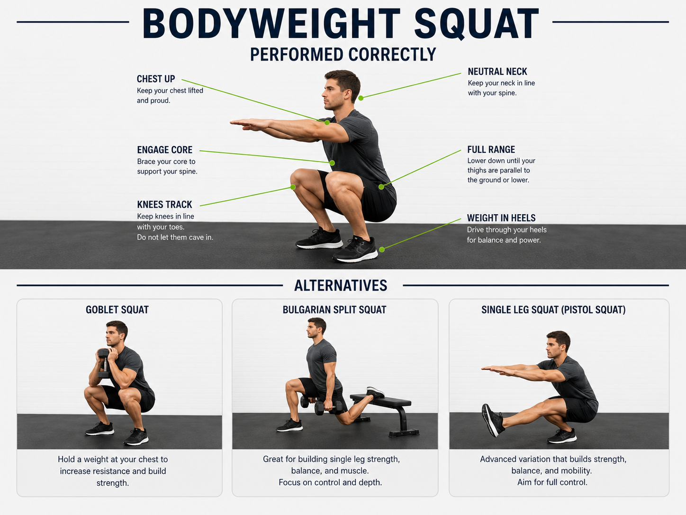
Squat
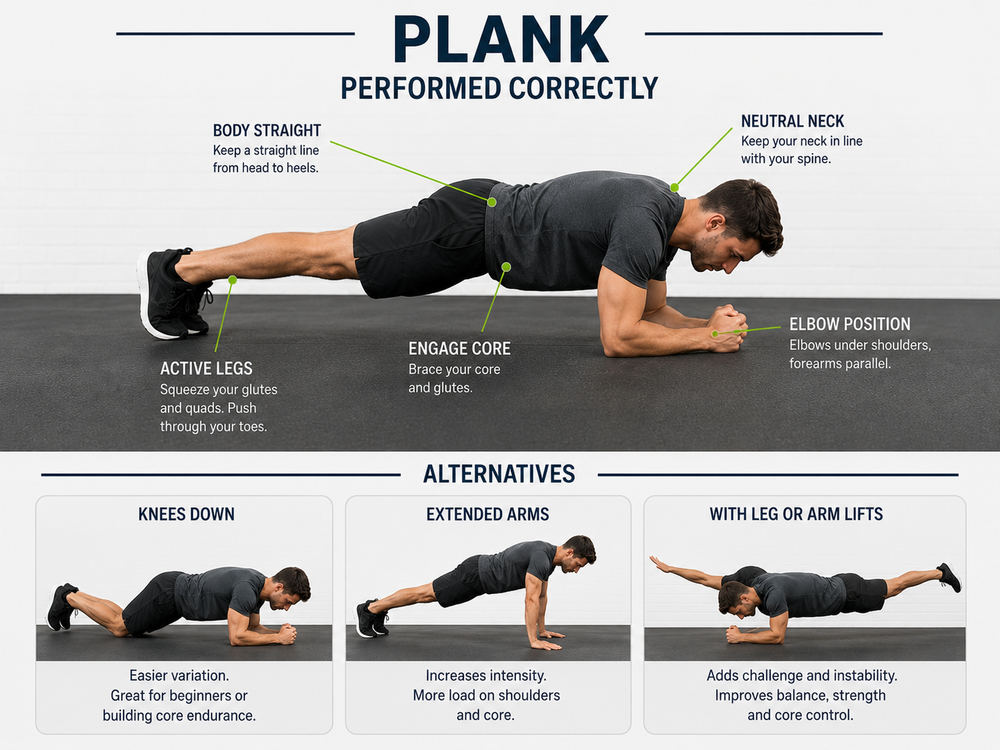
Plank
7.3 Progression in Climbing Technique
Technical progressions on the wall follow similar principles. A structured approach to climbing skill development:
- Isolate the skill — practice on easy terrain where the movement can be performed without the complication of physical difficulty (e.g. footwork drills on slab)
- Develop competence — practise the skill repeatedly across varied contexts at low intensity
- Integrate under fatigue — once the skill is reliable, practise it when somewhat tired to build robustness
- Apply at limit — use the skill on challenging routes and problems where it is genuinely required
Section 8: Common Gym Exercise Errors & Corrections
Recognising and correcting technique errors efficiently is the daily work of coaching. The table below outlines the most common errors seen in key gym exercises, with practical corrections. Climbing-specific movement errors are covered in Section 3.
| Exercise & Error | Correction Strategy |
|---|---|
| Pull-up — shrugging shoulders upward at the top | Cue: 'Pull your shoulders down and back first before pulling your elbows to your ribs.' Reinforce scapular depression before elbow flexion. |
| Pull-up — not achieving full hang at bottom | Cue: 'Fully straighten your arms between every rep.' Use pause hangs to reinforce the full range. |
| Push-up — sagging hips / banana back | Cue: 'Squeeze your glutes and push the floor away evenly.' Regress to incline push-up if core cannot maintain neutral spine. |
| Deadlift — rounding lower back | Cue: 'Proud chest, long spine.' Reduce load immediately. Address hip mobility restriction; may need regression to Romanian deadlift or kettlebell deadlift. |
| Squat — knees caving inward (valgus) | Cue: 'Push your knees out over your little toe.' Address hip abductor weakness; use band-around-knees for sensory feedback. |
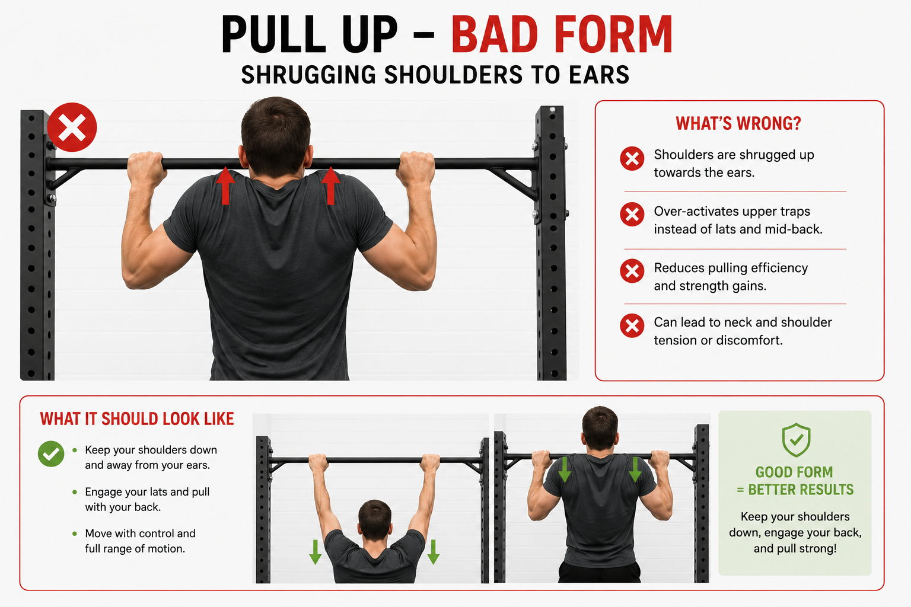
Pull-up — shrugging
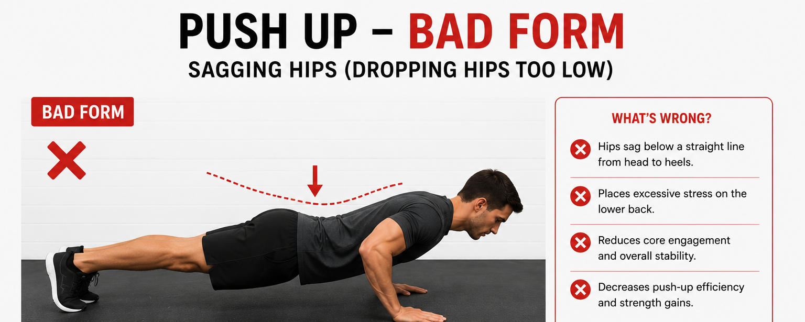
Push-up — sagging hips
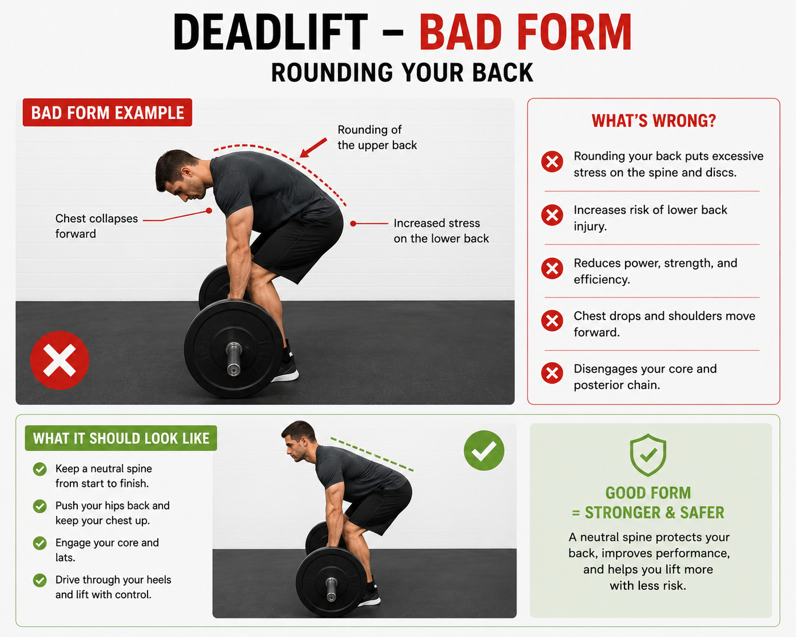
Deadlift — rounding back
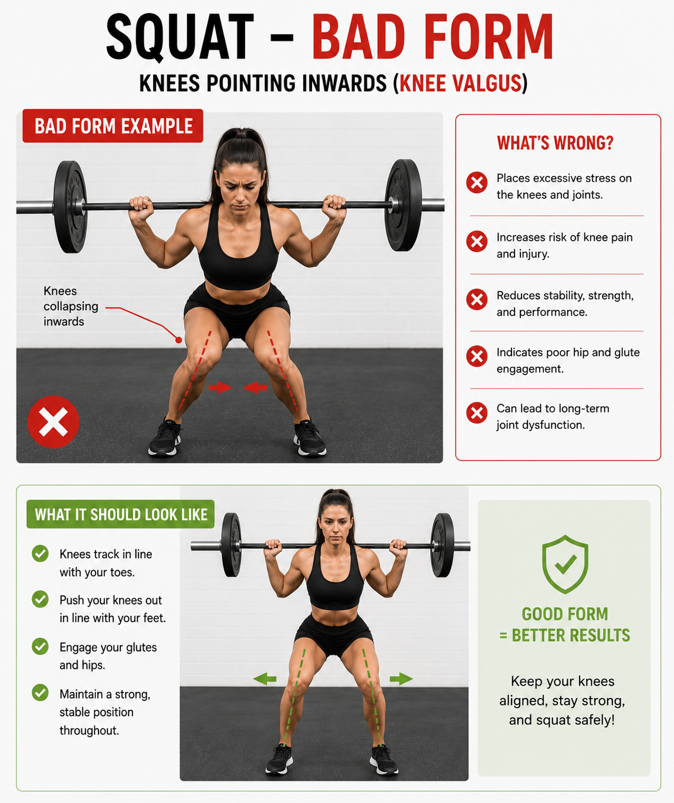
Squat — knee valgus
Section 9: Adapting for Special Populations
Climbing coaches work with a diverse range of athletes — children, older adults, people returning from injury, athletes with physical disabilities. Each population requires thoughtful adaptation of instruction, environment, and programming. This section provides an introduction.
| Population | Key Coaching Adaptations |
|---|---|
| Beginners (adult) | Use simple language; demonstrate frequently; prioritise safety and confidence over technical perfection; celebrate small wins to build intrinsic motivation. |
| Children & Youth | Shorter attention spans — vary activities every 5–10 minutes; games-based learning; avoid comparative feedback (ranking vs. peers); monitor load carefully — growth plates are vulnerable. |
| Older Adults (60+) | Longer warm-up; reduce impact and balance risk; prioritise mobility and stability; use lower loads with higher reps; be aware of medication effects on heart rate and balance. |
| Returning from injury | Work within pain-free range of motion; increase load conservatively (10% rule); liaise with physiotherapist; document all modifications and any symptom changes. |
| Para-climbers / Adaptive athletes | Individualise completely — there is no single template. Work closely with the athlete to understand their specific abilities and goals. Seek specialist guidance where needed. |
Section 10: Functional Training Tools
Functional training tools — suspension trainers (TRX/rings), kettlebells, and resistance bands — are versatile, accessible, and particularly well-suited to climbing-specific conditioning. This section introduces each tool and highlights its key application for climbing athletes.
10.1 Suspension Trainers (TRX / Gymnastics Rings)
Suspension trainers use adjustable straps anchored to a fixed point, allowing a wide range of bodyweight exercises with variable difficulty controlled by foot position. Rings add an instability element that significantly increases shoulder stabiliser demand.
TRX Row — excellent horizontal pulling; targets rhomboids, mid-traps, and rear deltoids; directly addresses postural imbalances in climbers
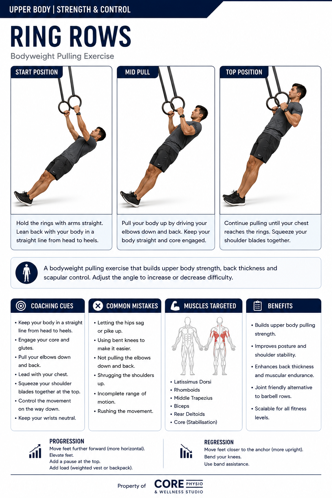
TRX Push-up — instability increases serratus anterior and rotator cuff demand; useful antagonist exercise
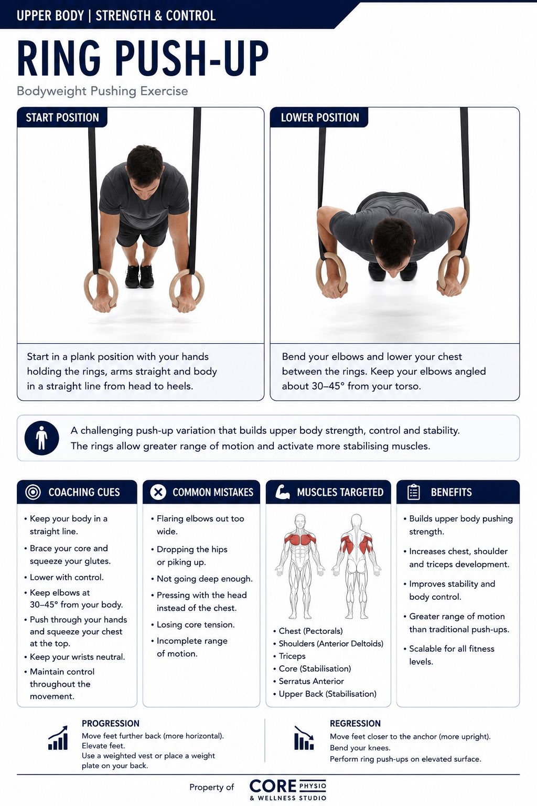
Ring Turn-out — extreme proprioceptive demand; only for athletes with strong shoulder stability foundation
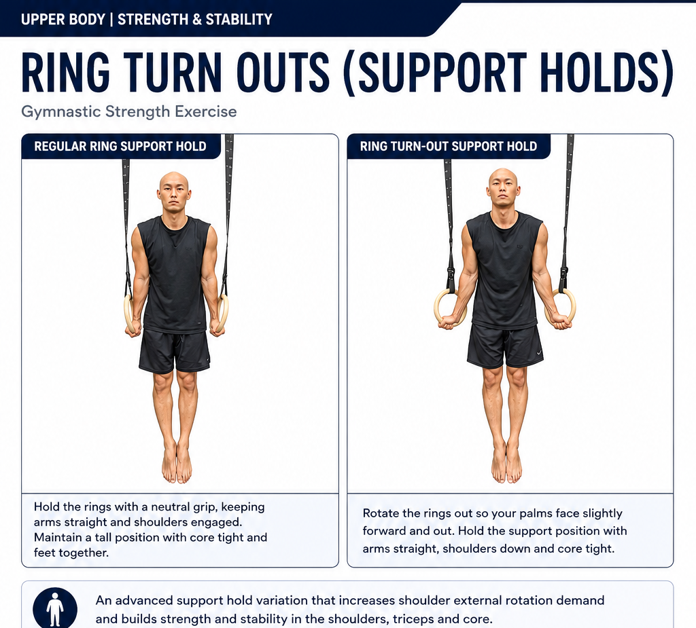
TRX Fallout / Body Saw — advanced core anti-extension exercise; highly transferable to steep climbing positions
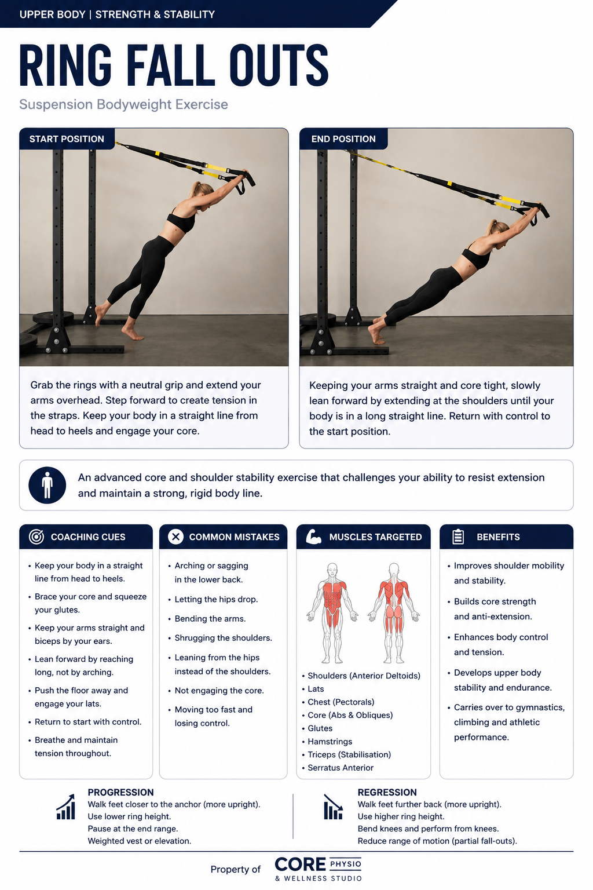
10.2 Kettlebells
Kettlebells are particularly effective for building posterior chain strength, grip endurance, and core stability simultaneously. Their offset centre of mass makes them ideal for developing grip and wrist strength.
Kettlebell Deadlift — teaches hip hinge pattern safely; excellent for beginning posterior chain development
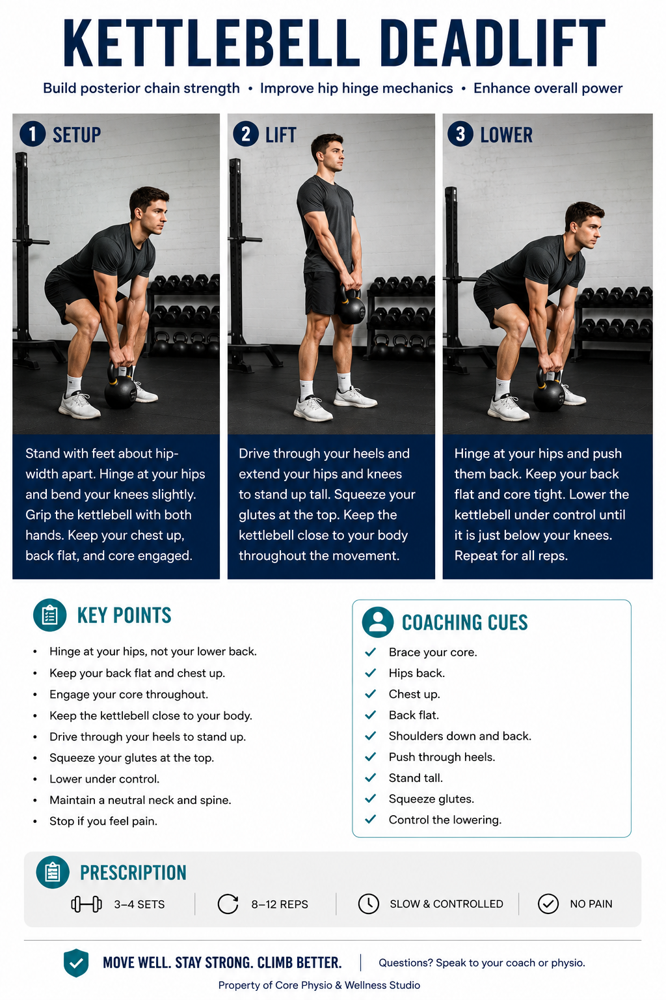
Kettlebell Swing — builds hip power and posterior chain endurance; high metabolic demand
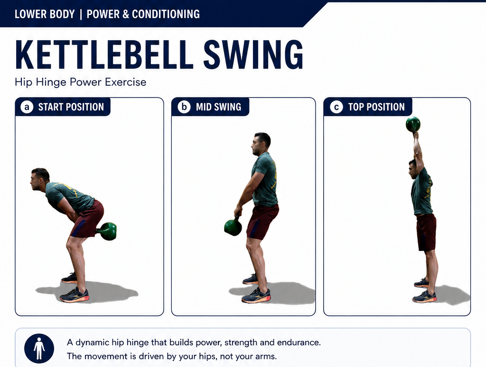
Goblet Squat — teaches squat pattern with thoracic extension; improves hip mobility through loaded range
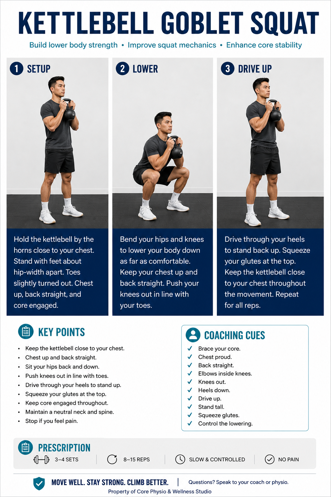
Turkish Get-Up — full-body movement integrating shoulder stability, core, and hip mobility — excellent climbing-specific conditioning
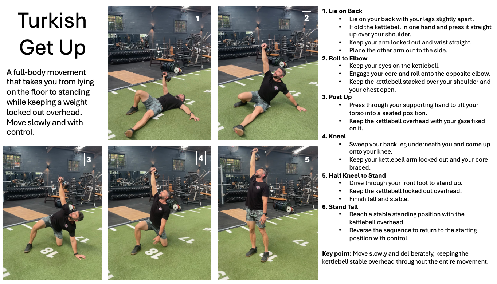
Farmer's Carry — loaded bilateral carry; builds grip endurance, scapular stability, and core anti-lateral flexion strength
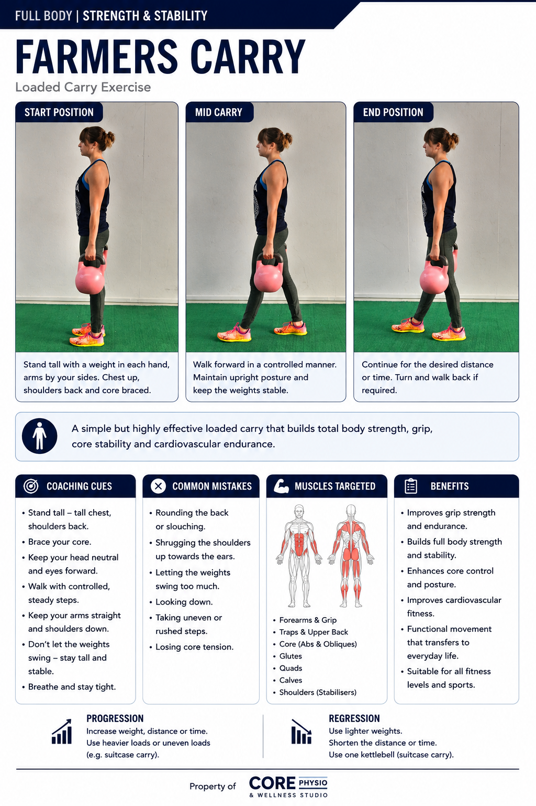
10.3 Resistance Bands
Resistance bands are low-cost, portable, and allow a large range of exercises that are particularly well-suited to warm-up, antagonist work, and mobility. The variable resistance (greatest at full stretch) makes them excellent for shoulder and rotator cuff work.
Band Pull-Apart — shoulder horizontal abduction; directly trains rhomboids and posterior deltoids — a staple antagonist exercise for climbers

Face Pull — external rotation and upper back; one of the most important exercises for shoulder health in climbers

Finger Extension — wrap a band around the fingers and open against resistance; direct antagonist work for the finger flexors
Clamshell / Hip Abduction — hip abductor activation; addresses glute medius weakness that contributes to knee valgus
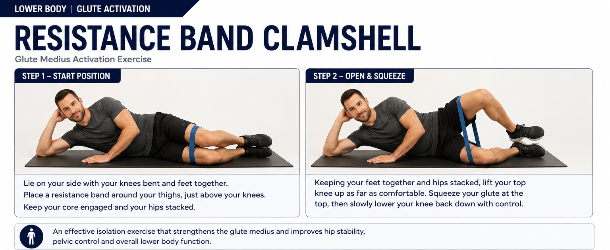
Pallof Press — anti-rotation core exercise; band anchored to side, press forward against rotational pull
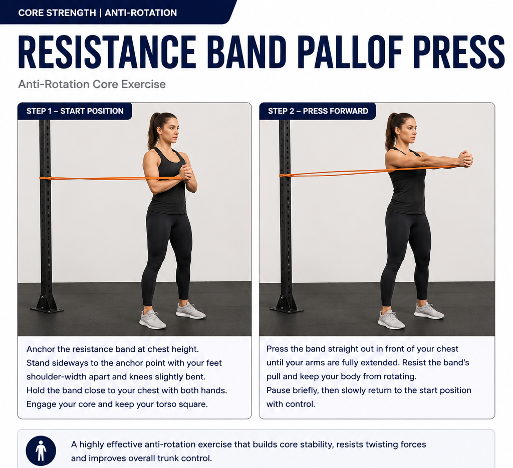
Module Summary
Module 5 developed the practical coaching skills needed to transfer technical knowledge to the athlete — across cueing, movement instruction, safety, and roped climbing instruction. Key takeaways:
Key Terms & Definitions
| Verbal Cue | A spoken instruction or prompt used to guide or correct movement. |
| Internal Focus Cue | A cue directing the athlete's attention to a body part (e.g. 'bend your knee'). Less effective for skill acquisition than external cues. |
| External Focus Cue | A cue directing attention to the outcome or effect of the movement (e.g. 'push the floor away'). Promotes more automatic, fluent movement. |
| Analogical Cue | A cue that uses a relatable image or analogy to prompt a movement naturally (e.g. 'imagine screwing your feet into the wall'). |
| Tactile Cueing | Hands-on physical guidance to correct or reinforce a movement position; requires explicit consent. |
| Progression | A variation of an exercise that is more challenging than the current version; applied when technique is mastered at the current level. |
| Regression | A variation of an exercise that is less demanding; used when an athlete cannot safely perform the current version. |
| Spotting | Physical assistance provided to protect an athlete from injury during a movement or fall; requires training to perform correctly. |
| Mirror Neurons | Neural cells that activate both when performing and observing a movement; the mechanism underlying learning through demonstration. |
| Barn-Door | A climbing movement fault where the body swings away from the wall when removing one hand, due to poor balance and inadequate counterbalancing. |
| Flagging | A climbing technique where a free leg is extended to one side or behind to counterbalance the body and prevent barn-dooring. |
| Heel Hook / Toe Hook | Foot techniques that use the heel or toe to actively pull on a hold rather than only pushing; heel hooks are most powerful with the knee directly above the heel. |
| PBUS | The belay sequence chant — Pull; Brake; Under; Slide — used to teach the correct top rope belaying motion. |
| Z-Clipping | A lead climbing error where the rope is clipped out of sequence, causing it to run from a lower quickdraw up through a higher one, creating dangerous drag and a risk of a longer fall. |
| Back-Clipping | A lead climbing error where the rope runs through a carabiner the wrong way, risking the rope unclipping itself in a fall. |
| ARC Training | Aerobic Restoration and Capillarisation — sustained low-intensity continuous climbing used to develop forearm endurance and capillary density. |
| TRX | Total Resistance Exercise — a suspension trainer system that uses body weight and gravity to provide resistance; highly versatile for climbing conditioning. |
| Face Pull | A resistance band or cable exercise pulling toward the face with elbows high; targets external rotators and rear deltoids — critical for climber shoulder health. |
Key Takeaways
- The three cueing modalities — verbal, visual, and tactile — each have distinct strengths; external focus verbal cues produce the best motor learning outcomes
- Climbing movement is built on balance, weight shift, and body tension before any technical skill is layered on top
- Footwork precision (ball of the foot, heel hooks, toe hooks) and efficient hand technique (gastons, side pulls, palming) are the most common technical gaps in developing climbers
- Safe falling technique and correct spotting — guiding falls at the hips, never catching — must be taught before unroped bouldering at height
- Top rope belay instruction follows a structured three-session progression, with the PBUS chant as the core teaching tool
- Lead instruction builds directly on top rope competence, covering clipping technique, lead belaying, and jam release
- Progressions and regressions must be planned for every exercise; always change one variable at a time and master fundamentals before advancing
- Common gym errors should be addressed one at a time with the most impactful correction first
- Adaptation for special populations requires individual consideration; youth, older adults, and returning injury athletes all need programme modification
- Functional training tools (TRX, kettlebells, bands) are highly applicable to climbing conditioning and provide excellent variety and specificity
Looking Ahead
In Module 6 — Advanced Climbing Technique Instruction — applying everything you have learned about the human body, training science, and coaching practice to the specific demands of climbing technique and climbing performance programming.